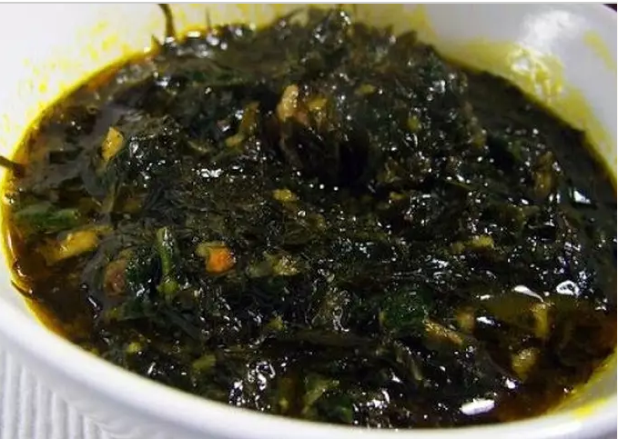

Eru Recipe

Description
Eru is a soup from Cameroon. It is a specialty of the Bayangi people, of the Manyu region in southwestern Cameroon. It is vegetable soup made up of finely shredded leaves of the eru or okok.
ingredients
- 500 g Smoked fish
- 750 g Spinach
- 500 g Beef skin in pieces
- 500 g Beef
- 100 g Dried Okok or Eru leaves
- 30 g Crayfish
- 500 ml Red palm oil
Steps
- Wash and cut up all your vegetables (Eru).
If you are using dried Eru, start by soaking it in water.
- After having cut and washed the beef skin, boil it for 30 minutes then add the beef previously cleaned and cut. Remember to add salt to it.
- Let boil for 10 minutes until the gravy is obtained. You can add hot pepper to it. Add the soaked fish at the end of cooking. You have to keep the juice, it will be useful for the rest of the cooking.
- In a pot, stir in the spinach or waterleaf. After 10 minutes, add the Eru and let the mixture simmer. Stir occasionally.
- Add the meat and fish, stir the mixture and simmer for 5 minutes.
- Then add the pan juices and palm oil, stir and simmer for 15 minutes.
- Finally add your crayfish and simmer for 5 to 10 minutes.
Home page